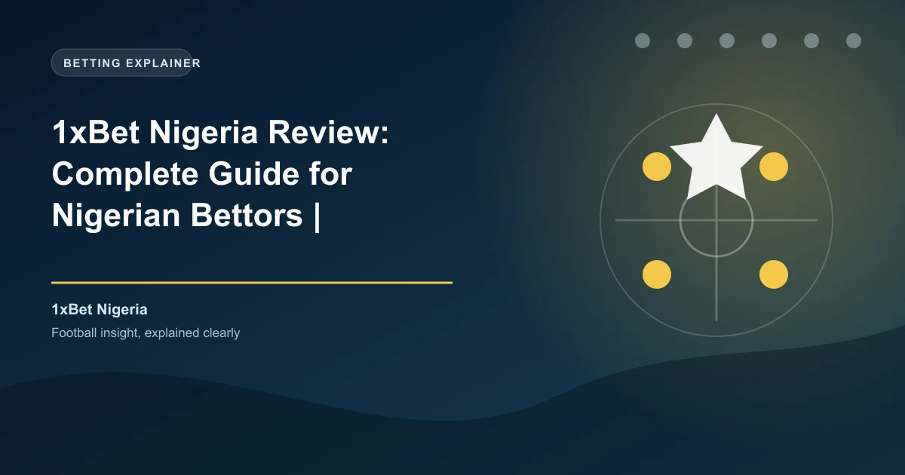

Nigeria is one of Africa's largest and most active sports betting markets, with an estimated 60 million active bettors according to Statista. Among the many platforms competing for Nigerian bettors' attention, 1xBet has established itself as a serious contender — holding a local NLRC license, offering generous bonuses, and supporting the mobile payment methods Nigerians actually use. This review covers everything you need to know before signing up.
Unlike many offshore bookmakers operating in Nigeria's grey market, 1xBet has taken the formal regulatory route. The platform is licensed by the National Lottery Regulatory Commission (NLRC) and operates locally through Beaufortbet Nigeria Limited, which holds the license. This NLRC authorization was granted in September 2019 and has been renewed since, making 1xBet one of the formally regulated international bookmakers in the country.
The NLRC license means 1xBet complies with Nigerian gambling regulations, including player fund segregation, responsible gambling measures, and tax remittances. Under Nigerian law, operators must remit a 2% winnings tax to the government, and 1xBet handles this automatically at source. This regulatory framework gives Nigerian bettors a level of protection that offshore-only operators simply do not provide.
For context, the NLRC oversees all lottery and sports betting operations in Nigeria, and licensed operators must meet strict capital requirements and compliance standards. 1xBet's local incorporation through Beaufortbet Nigeria Limited demonstrates a long-term commitment to the Nigerian market, rather than simply targeting players from abroad without regulatory oversight.
1xBet Nigeria offers one of the most generous welcome bonuses in the Nigerian market. New players can claim a 300% first deposit bonus up to ?1,200,000, which is significantly higher than most competitors. Here is the breakdown:
| Detail | Value |
|---|---|
| Welcome Bonus | 300% first deposit bonus |
| Maximum Bonus | ?1,200,000 |
| Minimum Deposit | ?100 |
| Wagering Requirement | 5x in accumulator bets |
| Minimum Odds per Leg | 1.40 |
| Minimum Selections | 3 per accumulator |
| Validity Period | 30 days from registration |
To claim this bonus, you need to register a new account, opt in to the bonus offer, and make your first deposit of at least ?100. The bonus funds are credited instantly and can be used across any sport, though you must place accumulator bets with at least three selections at minimum odds of 1.40 per leg.
Beyond the welcome offer, 1xBet Nigeria runs ongoing promotions including accumulator boosts of up to 40%, cashback on losing bets, free bet offers tied to major football events, and a loyalty program that rewards consistent betting activity with free bets and bonus credits.
One of 1xBet Nigeria's strongest advantages is its support for the payment methods Nigerians actually use daily. The platform accepts deposits starting from just ?100, making it accessible to casual bettors and high rollers alike.
1xBet Nigeria supports deposits in Bitcoin, Ethereum, USDT, Tron, Litecoin, and over 40 additional cryptocurrencies. Crypto deposits are processed instantly with no fees from 1xBet's side. For Nigerian bettors who use crypto to navigate the CBN's restrictions on international card transactions, this is a significant advantage. The Central Bank of Nigeria's circular on cryptocurrency transactions has made traditional international card payments more difficult for some Nigerians, and 1xBet's crypto support effectively bypasses this friction.
1xBet Nigeria processes withdrawals efficiently, with the minimum withdrawal set at ?550. Here are the available methods and their processing times:
| Method | Minimum Withdrawal | Processing Time |
|---|---|---|
| Bank Transfer | ?550 | 15 minutes – 24 hours |
| Opay | ?550 | 15 minutes |
| Palmpay | ?550 | 15 minutes |
| Visa (Fast Withdrawal) | ?550 | 15 minutes – 24 hours |
| Cryptocurrency | ?550 (equivalent) | 15 minutes |
1xBet charges no internal withdrawal fees, though your bank or payment provider may apply their own charges. The 15-minute processing time for mobile wallets and crypto makes 1xBet one of the fastest-paying bookmakers in Nigeria. Larger withdrawals above certain thresholds may require additional KYC verification, including a valid government-issued ID and proof of address.
1xBet Nigeria covers over 60 sports with more than 1,000 daily events. For Nigerian bettors, football is overwhelmingly the most popular sport, and 1xBet delivers exceptional depth in this area.
1xBet offers 500+ markets per match in top football leagues including the English Premier League, La Liga, Serie A, Bundesliga, and the UEFA Champions League. Nigerian bettors also get extensive coverage of the NPFL (Nigeria Professional Football League), CAF Champions League, and major African football competitions. Markets include match result, over/under goals, Asian handicaps, correct score, both teams to score, first goalscorer, corner and card props, and player-specific specials.
The live betting section at 1xBet Nigeria is one of the most comprehensive in the market. Thousands of live events are available daily across football, tennis, basketball, cricket, and esports. The live interface provides real-time score updates, statistical overlays, and?? odds movement.
1xBet also offers live streaming on select events for registered users with a positive account balance. While not every match is streamed, the coverage includes thousands of events monthly across lower-tier football leagues, tennis challengers, and basketball competitions. The cash-out feature is available on both pre-match and live bets, allowing Nigerian bettors to secure profits or minimize losses before an event concludes.
1xBet offers a dedicated mobile app for Android devices, available as a direct APK download from the 1xBet Nigeria website. Google Play does not permit real-money gambling apps in most regions, so Android users must enable "Install from Unknown Sources" in their device settings to complete the installation. The iOS app may be available on the Apple App Store depending on your region.
The mobile app provides full access to all betting markets, live streaming, cash-out, deposit and withdrawal functionality, and account management. According to Statista, mobile betting accounts for over 70% of all online wagers in sub-Saharan Africa, making app performance a critical consideration for Nigerian bettors who primarily bet from their phones.
The app is lightweight (under 60 MB) and optimized for the Android Go devices that are common in the Nigerian market. It supports biometric login for added security and works well on both WiFi and mobile data connections.
1xBet consistently offers competitive odds across major football leagues. Independent odds comparisons show that 1xBet's margins on English Premier League matches typically range between 3-5%, which is competitive with the industry average. The platform's odds on African football, including NPFL and CAF competitions, tend to be particularly sharp due to the bookmaker's focus on the African market.
The platform supports decimal, fractional, and American odds formats, and bettors can customize their preferred view. 1xBet also offers enhanced odds on selected matches daily, which can provide additional value for accumulator bettors.
1xBet Nigeria provides 24/7 customer support through multiple channels:
Support is available in English and Nigerian Pidgin, and the team is generally well-versed in local payment methods and betting habits. According to Trustpilot, 1xBet's customer support ratings vary, with positive reviews often highlighting the speed of live chat and negative reviews focusing on withdrawal verification delays.
1xBet provides responsible gambling tools including deposit limits, session time limits, self-exclusion options, and reality checks. As an NLRC-licensed operator, 1xBet is required to comply with Nigerian responsible gambling regulations, which include displaying helpline information and preventing underage access.
However, Nigeria does not yet have a national self-exclusion registry like the UK's GamStop. The NLRC has been working on strengthening responsible gambling frameworks, but the regulatory infrastructure is still developing. Nigerian bettors should take advantage of 1xBet's built-in responsible gambling tools and exercise personal discipline.
Registration on 1xBet Nigeria is straightforward and takes under two minutes. Nigerian bettors can register via:
All registration methods require you to be at least 18 years old (the legal gambling age in Nigeria) and to complete KYC verification before your first withdrawal. KYC requires a valid government-issued ID (NIN, voter's card, driver's license, or international passport) and proof of address.
1xBet is one of the best betting platforms available to Nigerian bettors in 2026. The combination of NLRC licensing through Beaufortbet Nigeria Limited, a massive 300% welcome bonus up to ?1,200,000, support for Opay, Palmpay, USSD and other locally popular payment methods, and deep football market coverage makes it a top-tier choice. The ?100 minimum deposit and 15-minute withdrawal times via mobile wallets add further appeal.
The main limitations are the complex bonus wagering requirements and the ongoing KYC verification process that some users find frustrating. However, these are standard industry practices and not unique to 1xBet. For Nigerian football bettors who want generous bonuses, local payment support, and comprehensive market coverage, 1xBet delivers excellent value.
Ready to bet? Check our free daily football predictions for value bets across the Premier League, La Liga, and NPFL.